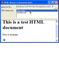
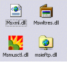
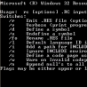

High Resolution Multimedia Timer
High Resolution Multimedia Timer
 Subclassing and Hooking with Machine Code Thunks
Subclassing and Hooking with Machine Code Thunks

Resources Index
|  | Storing and Showing HTML Resources in a VB ApplicationSince Internet Explorer 4, it is has been possible to display HTML directly from application resources using the res:// protocol. This article demonstrates how to embed HTML files and images into your application resources to use this function and encapsulate HTML files. Last Updated: 3 January 2002 |
|  | Icons without forms and document association icons in VBVB allows you to choose an icon for an executable, but it offers a somewhat limited choice. The icon must be stored in a form included in your VB project, and you can only pick one icon to be exposed publicly per project. Whilst the single icon is the most important one, you might want to have additional icons for two reasons:
Last Updated: 21 March 2000 |
|  | Using RC.EXEThis article provides a short look at how to use the Resource Compiler (RC.EXE) to create resource files (.RES) for Visual Basic applications. Using RC.EXE directly is often better than using the wizards provided with VB5 and 6 as you have more control over including arbitrary data; in addition the wizard versions do not encode icons correctly. Last Updated: 1 November 1999 |
Reading Data from Local or External Library ResourcesOften your application will have associated data, such as pictures, sounds, static data and so forth you need to ship with it. If you are localizing your application then you also need to be able to provide alternative text strings for menus, messages, labels on so forth. Resources are a great way to package up all of this extra data into a single file and read it efficiently at run time. Not just that, but by putting the data into a resource file you significantly reduce the chances of someone tampering with your files and replacing them with their own "humourous" versions. Last Updated: 1 November 1999 | |